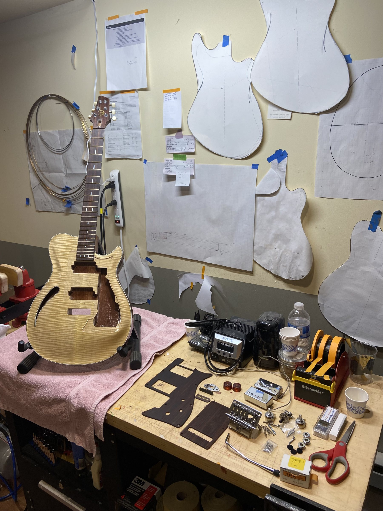

The Bench
What makes a Greylock feel right.
This section is a growing review of shop notes, works in progress and process essays.

First principles
We learn from convention and we build on that with intention.
Greylock starts from first principles: the violin family proportion body system, the snakehead headstock built for a straight string pull and real tuning stability, impervious frets, beautiful woods, intuitive and flexible electronics, cohesive pickup sets... because heritage techniques earn their place when they solve a real problem better than the alternative.
When something works, there’s a specific, explainable reason why. When it doesn’t, that gets said plainly too. There’s no mystified tone talk here, no secret formulas, no vague reverence for the past for its own sake — just a builder who’s genuinely curious about hard problems and more interested in how a guitar plays than in how it’s talked about.
Work in progress
The work between the notes.
Templates, carving, binding, wiring, and glue-ups: a few unvarnished moments from the shop floor.
Shop Notes
More notes are on the way.
Pickups
A guitar’s voice is decided at the pickups.
At Greylock, that decision is made with the player. Each set is wound for a particular kind of playing, and the right one is the one that fits your hands, your amp and your music.
Read the full note →Have a question for the bench?
Ask about a material, a pickup, or a build detail and we may turn it into the next shop note.
Start the Conversation